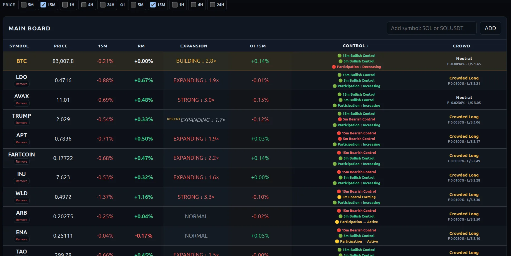

Find a coin
Use the scanner to narrow your search.
Find active crypto markets with Zero Scanner. Read buying and selling pressure through Control Candles. Give your next trade a reason.
Free to explore · No account required

Actual dashboard snapshot · Interface evolves
A Control Candle is more than a big candle. Strong volume and Force Index highlight unusually strong buying or selling pressure. The candle’s area becomes a reference for watching whether price respects or violates that control.
Explore Control CandlesUse the scanner to narrow your search.
Examine price around the candle’s area.
Define your entry, invalidation and target.
A clearer search.
A more deliberate trading decision.